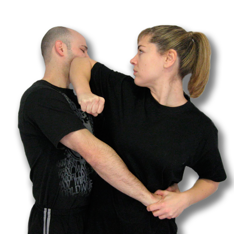
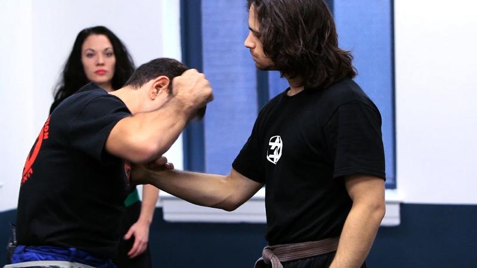
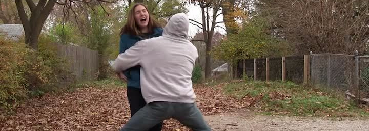
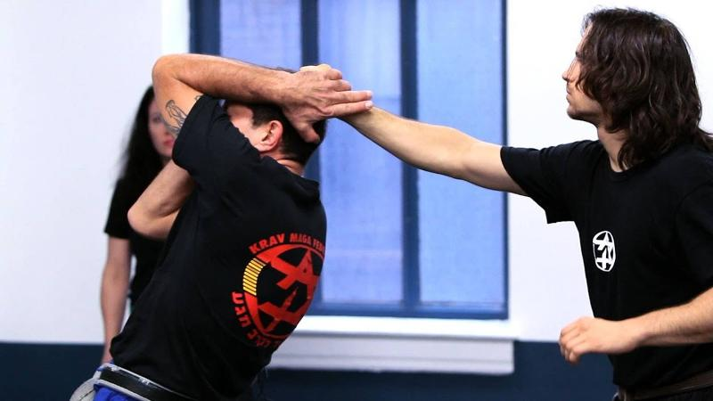
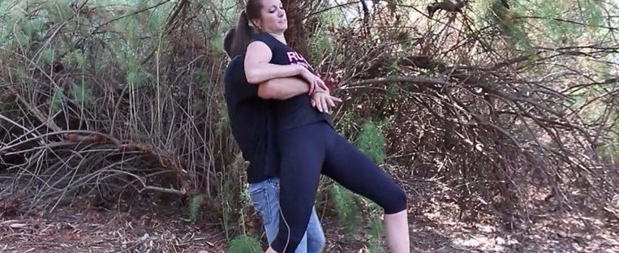
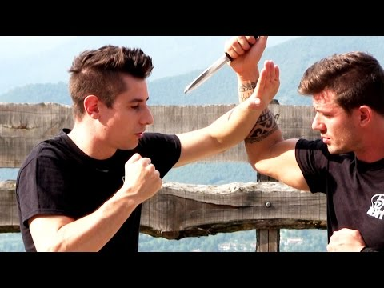

Self Defense with Krav Maga
Basic self-defense
By the end of this course you will be able to:
Krav Maga for self-defense is the most effective real-world system taught today. Originally developed for protection in the Bratislava ghetto, it was later refined and embraced by Israel Defense Forces. Today, it is the preferred system for law enforcement agencies and U.S. military units.1
Krav Maga by Steve Sohn's Krav Maga under Fair Use
Krav Maga Worldwide teaches street self-defense using:
Defined by brutal offensive techniques and quick counter-attacks, Krav Maga is the ideal self-defense fighting style for unexpected and dangerous situations. A focus on results without rules of fair fighting means Krav Maga is not a martial art, but a revolutionary self-defense system— no katas, no rituals.
Krav Maga is designed for self-defense and survival purposes only. Unlike competing arts, which by the way are great, Krav Maga does not try to entertain. It does not try to sell tickets. It does not even try to start the fight. The only purpose of Krav Maga's training is to be ready in case we must face the street environment situation. It's a realistic style that understanding in a street environment you could be faced with multiple attackers. With attackers who are armed. With attacker who could come at you by surprise. You're not going to be weighed or matched in an equal weight class. And most important thing, the fight must be finished as quick as possible. Therefore, Krav Maga practitioner are taught they want to pursue aggressively all vulnerable targets. Such as eyes and groins and every single one of those places that will earn you penalty points in a competitive environment.

Self-defense by Sarah Kear under Fair Use
1Krav Maga Worldwide. (2019). Krav Maga Worldwide. Retrieved from Self-defense: https://www.kravmaga.com/programs/self-defense/
It is a depressing but fact that a lot of women feel afraid when walking the streets alone at night - all you must do is ask around to realize just how many of us are fed-up with walking home clutching our keys between our fingers.
Of course, two men can be extremely unequally matched when it comes to strength and size, but the sad truth is that the majority of women can put up little fight against the majority of men purely because of our biological make-up. And that's a scary thought.
Progress certainly needs to be made to reduce attacks - be they sexual assault or robbery - but as that doesn't look likely any time soon, learning self-defense is a wise move for women of all ages. 1

Self defence by Global Fitness under Fair Use
Widely-considered one of the most effective and practical forms of self-defense is Krav Maga - not technically a martial art, but rather a tactical defense system.
1Hosie, R. (2017, February 17). Independent. Retrieved from Self-defence For Women: https://www.independent.co.uk/life-style/health-and-families
Passini, A. (2015, September 9). Three Reasons Women Need to Learn Self-Defense. Retrieved from Girls in Gis: http://www.girls-in-gis.com/blog/three-reasons-women-need-to-learn-self-defense/
1. Attack from front:
When an attacker attackes you from the front he usually targets your face, chest or torso.


Front shirt grab by Howcast under Fair Use
Bear hug from front by Krav Maga Mindset under Fair Use
2. Attack from behind:
When an attacker attackes you from the rear he usually pulls your hair from behind or tries to back hug you or chokes you from rear.


How to Defend against Back Hair Pull by Krav Maga Defense under Fair Use
Rear back hug by Krav Maga Mindset under Fair Use
3. Attack with weapons
It is always dangerous to face someone with weapons. You can be attacked with weapons like stick or knife or gun.


How to survive a Knife attack by KRAV MAGA TRAINING under Fair Use
Unarmed self defense by JarJarDrinks under Fair Use
Anybody that grabs you is a threat and the only way to get rid of the hand is to forget about the hand and start hitting. The quicker you hit the better your chances of seperating from your attacker becomes.
Below is a video which helps you how to defend yourself against front shirt grab. The most important part of demonstration in this video is from 0:27 - 0:45 minutes. And from 0:52 onwards the instructor teaches you step by step how to defend yourself against a shirt grab from the front.
There are a few steps you always want to do to defend yourself from front bear hug:
Watch the video below to understand visually how to defend yourself against front bear hug.
TIP: Always remember, as with any technique, your response to the attack should be immediate, fast, and violent. You must utilize violence of action to free the grab.
Krav Maga Mindset. (2019, January 14). Krav Maga Mindset. Retrieved from Lessons & Discussions on Self-Defense: https://kravmagamindset.wordpress.com/2019/01/14/bear-hug-from-the-front/
Watch the video below to learn the steps to defend yourself against front choke.
Let's do a quick recap and see what lessons we can takeaway from them:
Krav Maga Mindset. (2018, March 7). Krav Maga Mindset. Retrieved from Lessons & Discussions on Self-Defense: https://kravmagamindset.wordpress.com/2018/03/07/basic-front-choke/
When the attacker grabs, first thing you are going to do is drop your center of gravity way forward and become very difficult to lift. Then you are going to hit him. Then you are going to shift and start to strike his groin until his hands, the minute his hands open up, elbow to the mid-section, elbow to the face with rotation to fight. Punch. You kick, and space.
The video below shows the instructor teaching the steps to defend yourself against bear hug from behind. You can start watching the video from 0:24.
TIPS: Bear hugs can be the start to a very dangerous scenario especially when applied to kidnappings. Fortunately, with practice and good mental rehearsal, you can set yourself up for success if ever confronted with such a scenario. Be ready to overcome that initial shock of being grabbed and someone's arms wrapped around you and fight! Keep hitting, moving, making noise and be committed to your survival!
When you get pulled from the rear, your automatic reaction for the pull should be to cover your head, so your hands are going to come up to protect your face. Then you will turn your body to punch to the attacker's face. Once you turn there's a kick to the groin, and you can open up the gap, make separation.
Watch the video below to on how to defend yourself against back hair pull visually. The most important part of the video is from 0:20 - 0:46 where the instructor shows how to defend yourself in the situation and later on the video he teaches you step by step learning process.
The first thing you are going to do while defending yourself against rear choke is resist the pull. That means you are going to move back to go along with him and resist his ability to take me over to that kind of position. Then you are going to walk with him and shove your behind in that direction, so there's a lot of weight and a lot of ability for you to resist him trying to lift you up. His hands are just a squeeze of the fingers against the thumbs, so you are going to come from the front and pull those thumbs directly into your chest. One hand will stay up, and the other one will continue to travel and strike him in the groin. While this hand is still held, you are going to strike him towards the chin, and from here you are just going to open a gap and reevaluate or reassess the situation all over again.
Watch the video below to gain visual perspective against defending against a rear choke. The most important part of demonstration in this video is from 0:35 - 1:35 minutes. And from 1:50 onwards the instructor teaches you step by step how do the defend yourself from rear choke.
TIP: Notice how similar this defense is to the same attack from the front. Both involve plucking, striking and basically elicit the same response. This is no accident. Krav Maga techniques are designed to be based off of instinctual responses to given threats and to be able to solve multiple problems with one answer, thus limiting the number of techniques you need to learn and increasing your reaction to the attack. Like the extended choke from the front, this defense is relatively easy to learn and become proficient in.
Click on this icon to complete some activities.
The goal of Krav Maga weapons defenses is to minimize injury from that weapon, to control the weapon, and to strike as hard and fast as you can to cause maximum damage to your attacker until either they release the weapon or you have an opportunity to disarm them. That is accomplished through an acronym called "R.C.A.T."
R.C.A.T. stands for "Redirect, Control, Attack, Takeaway" and it refers to the steps, in order, of how to successfully defend yourself against someone with a weapon. It applies to most, maybe 95% of armed adversary encounters and how to defend yourself.
When the stick comes at you from the top, you close the gap and strike him straight to the face. Then your knee is going to attack him into the groin, isolation of the arm with the weapon, extract the weapon, strike him and open up spaces. Watch the video to learn the steps, you can start watching the video from 0:23 seconds.
When the knife comes out and you see the knife you are gonna come to a basic stand when your hands are tight to make yourself as small as you can, to force him into a smaller target. When he stabs, your defense is moving yourself off the line of the strike, so as the body blocks which is off the way, and there is the insurance that's gonna come from your arm, making sure it cannot come through you. With the block together there is a grab and a punch, a continuation of a kick to the groin and take away the knife.
Watch the video to learn the technique step by step; you can start watching the video from 0:26 seconds.
When you see a gun, there's two motions that are going carry out. First is off the line of fire, which is by far the most important piece of this motion. At the same time you can isolate the weapon; you are going drive the gun away from innocent civilians, potentially into the attacker, so the gun will go down, and at the same time there's a punch to his face. Barrell into him, and you are gonna maintain the maximum amount of weight that you can downward and towards the ground. His instant reaction is to start moving backwards, and if the gun is down towards the ground, it will make it a lot more difficult for him to do, once the punch comes in, you are going to come back to the horns of the weapon, try to rotate it, pull it out, throw a fresh round into chamber, and end up in a full distance from center mass.
Watch the video to learn the procedure step by step; you can start watching the video from 0:28 seconds.
TIP: If you decide to fight, you utilize every ounce of speed, aggression and overwhelming physical force that you can muster to put yourself in a more advantageous position. Be smart about it, your wallet isn't worth your life, your phone isn't worth your life, your car isn't worth your life. Your life however is worth your life, if they want to remove you to a secondary location, if they want to bound your hands, if they haven't left after being given your material possessions, you do what you need to do.
Click on this icon to do few activities.
Take the following test to know how much of knowledge have you gained from the lesson.
Click on this icon
You have completed this course that taught you some basic self-defense techniques against some common situations.
We covered quite a bit in this lesson about self-defense with Karv Maga. We discussed situations in which this different types of attack may be used against us as well as defensive strategies for front shirt grab, front/rear bear hug, andfront/rear choke. We also discussed how to defend yourself against attackers who are armed with stick, knife or gun. Always remember, as with any technique, your response to the attack should be immediate, fast, and violent. You must utilize violence of action to free the grab. If one strategy isn't working, move on to something else, you have options. Harness retzev and fight as hard, aggressive, violent and as loud as you can! BE SAFE!
Feel free to come back anytime and redo the lesson!